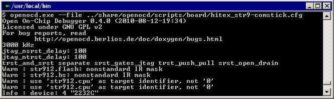

QuickStart reference for the GDB Server
Getting started with an GDB Server based JTAG solution
To use any of the GDB Server-based JTAG solutions available, you must configure the
hardware and the software drivers involved.
Currently the following GDB Server-based J-TAG solutions are available:
Using OpenOCD together with STR9-comStick
Follow these instructions to install and configure the OpenOCD (Open On-Chip Debugger) server:
-
Download OpenOCD (eg. version 0.4.0) from
http://developer.berlios.de/projects/openocd.
Release information is found at
http://openocd.berlios.de/web.
Extract the files to C:\openocd-0.4.0
-
Download ftd2xx (CDM20802 WHQL Certified.zip) from
http://www.ftdichip.com/Drivers/D2XX.html.
Extract the files to C:\openocd-0.4.0\ftd2xx
(This folder name is used by the configure command below)
-
Insert the STR9-comStick device into a USB port on the PC. Windows will find the new hardware and ask for its driver.
The USB driver is found in the
...\ARM\drivers\STComstickFTDI directory in your Embedded Workbench installation.
-
Download and install Cygwin from
http://www.cygwin.com/.
Also select the additional GNU Make and GCC tools to be installed.
-
Build the OpenOCD server
Start the Cygwin command line window and do following:
$ cd /cygdrive/c/openocd-0.4.0
$ ./configure --enable-ft2232_ftd2xx --with-ftd2xx-win32-zipdir=ftd2xx
$ make
$ make install
-
Start the OpenOCD server
Do following in the Cygwin command line window:
$ cd /usr/local/bin
$ openocd.exe --file ../share/openocd/scripts/board/hitex_str9-comstick.cfg

-
Start Embedded Workbench and open the USB demo example project for STR9-comStick
usb.eww.
The TCP/IP address to OpenOCD server is localhost with port 3333.
This can be changed in the GDB server category in the project settings.
-
Start the debug session and click on the button Run when download has finished.
This application emulates a USB mouse. By connecting the secondary
USB connector to a PC, the mouse pointer on the PC screen will start moving.
Copyright © 1999-2011 IAR Systems AB.